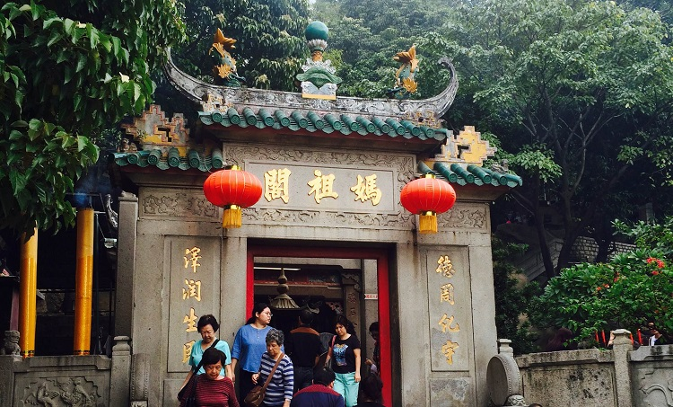
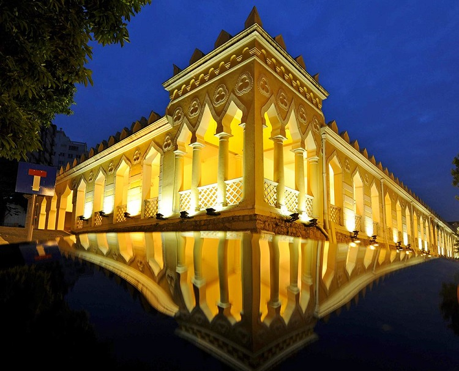

经典游
#古城经典两日游#
Day1：妈阁庙－港务局大楼
Day2：郑家大屋－巫婆井前地－圣母楞佐堂
第一天景点
#妈阁庙#
澳门著名的古迹之一，俗称天后庙。背山面海，沿崖建筑，古木参天，规模虽小却能充分融合自然，布局错落有致，是一座有中国文化特色的古建筑。

图：妈阁庙
地址：澳门半岛南端妈阁山西麓
#港务局大楼#
港务局大楼建于1874年，旧称摩尔兵营；俗称水师厂。当时是由印度来的警察的营地，可驻二百多名官兵，现在是海事及水务局的办公大楼。它位于妈阁山边，在妈阁街的一段坡道上，是一座受阿拉伯色彩及哥特建筑特色影响的砖石建筑。

图：港务局大楼
地址：澳门半岛妈阁斜巷2-F
第二天景点
#郑家大屋#
澳门郑家大屋， 是近代著名思想家郑观应的祖屋，位于妈阁街侧的亚婆井龙头左巷10号。郑家大屋的建筑特色是古雅的19世纪中式院落式大宅，但又受17、18世纪葡式住宅及西方古典风格的影响，是近代澳门岭南派宅院的代表，是澳门保存完好的最古老的中国传统大型民居建筑。
图：郑家大屋
地址：澳门半岛龙头左巷10号（近阿婆井前地）
#亚婆井前地#
亚婆井前地，是位于澳门西望洋山北面的广场。由于亚婆井前地及周围古旧建筑，故被列为澳门建筑、历史和文化文物区。亚婆井的葡文意思是山泉，此地昔日是澳门的主要水源地，又靠近内港，有井就有人住，澳门早期的葡萄牙人便聚居此处，故为最古老的住宅区之一
图：亚婆井前地
地址：澳门半岛亚婆井前街
#圣老愣佐堂#
圣老愣佐堂位于风顺堂街，又称“风顺堂”，有祈求“风调雨顺”之意，是澳门著名的大教堂。风顺堂建立于1560年，期间曾几度重修。在以风力为动力的帆船时代，远洋航行是非常危险的，往日葡萄牙人出海，都视风信而定行止。所以凡有船出港，船民都到风顺堂来祈风。教堂邻近南湾及西湾，是拍拖的好地方，情侣在海风轻柔的河畔漫步，气氛非常浪漫。

图：圣老愣佐堂
地址：澳门风顺堂区风顺堂街6号
#赌场经典两日游#
Day1：威尼斯人度假酒店－金沙赌场－金莲花广场
Day2：澳门博物馆
第一天景点
#威尼斯人度假酒店#
澳门威尼斯人度假酒店，是澳门的著名景点，它集酒店、博彩、会展、购物、体育、综艺及休闲设施于一体的综合性场所，是来澳门游客的必游之地。
图：威尼斯人度假酒店
地址：澳门望德圣母湾大马路，路氹金光大道
#金沙赌场#
澳门金沙娱乐场 （Sands Casino） 是位于澳门新口岸区的一间赌场，由威尼斯人（澳门）股份有限公司所持有及营运。赌场于2004年5月18日开幕，总投资逾2.4亿美元，现时为澳门最大的娱乐场。赌场面积接近180，000平方英尺，合共设有438张中西式赌台、以及921台角子机。赌场内除了1楼中场之外，另还设有贵宾区域“御匾会”、非吸烟区“明珠坊”（Pearl Room）以及新增建位于2楼的“如意坊”（Level of Fortune）。
地址：澳门半岛蒙地卡罗前地203号
#金莲花广场#
金莲花广场位于澳门新口岸高美士街，是为庆祝1999年澳门回归而设立的，是澳门著名地标及旅游景点之一。“盛世莲花”主体部分由花茎、花瓣和花蕊，青铜铸造，表面贴金装饰，形似莲叶的基座部分则由二十三块红色花岗岩相叠组成，寓意澳门三岛。莲花是澳门特别行政区区花，莲花盛开、亭亭玉立、冉冉升腾，象征澳门永远繁荣昌盛。
图：金莲花广场
地址：澳门新口岸高美士街（近毕士达大马路）
第二天景点
#澳门博物馆#
澳门博物馆建于大炮台上，是一间展示澳门历史和多元文化的博物馆，馆内的展品以其丰富和深刻的历史和文化内涵，展示数百年来澳门的历史变迁，讲述来自不同国家、具有不同文化背景的居民在澳门和平共处的生活
图：澳门博物馆
地址：澳门澳门博物馆前地112号（大炮台）
#美食经典四日游#
Day1：玛嘉烈蛋挞－议事厅前地－黄枝记－玫瑰圣母堂－大三巴街
Day2：明记牛什美食－祥记面馆－金玉满堂
Day3：添发湾仔翅美食－大炮台
Day4：澳门新葡京酒店
第一天景点：
#玛嘉烈蛋挞#
正宗的葡式蛋挞源自澳门地区，但也许只有澳门地区的玛嘉烈蛋挞，才算得上葡式蛋挞的经典。玛嘉烈是地道的澳门地区人，极具美食天赋。1988年，她采用澳督大厨的秘方，烘制成蛋挞待客，倍受欢迎。
受此启发，玛嘉烈开了家蛋挞屋，一时风靡港澳，后又改进配方，使外皮更酥，奶味更重，蛋香浓郁，味道一层又一层，却甜而不腻。从此，玛嘉烈蛋挞经众多观光客口碑相传，成为享誉世界的经典美食。肯德基风靡全国的葡式蛋挞，即是使用了玛嘉烈蛋塔的配方。
地址：澳门本岛马统领街金来大厦17B地铺
#议事亭前地#
议事厅前地是澳门民政总署大楼前的广场，面积约3，700平方米，是澳门四大广场之一。2005年作为澳门历史城区的部分被列入世界文化遗产名录内。议事亭前地北连板樟堂前地，南临新马路，南阔北窄，呈狭长的三角形，为热闹的商业及文化活动区。
地址：澳门亚美打利庇卢大马路（民政总署总部对面）
#黄枝记#
以竹升面起家，据说当年葡国总统访澳时，该店的制面师傅曾在其面前表演过竹升压面。黄枝记的虾子捞面尤为出名，面质爽滑，洒在竹升面上的虾子粒粒分明。真材实料制作的鲜虾云吞，皮薄馅美，一口一个弹牙的虾仁。艇仔粥的配料丰富，繁而不杂。虾子捞面和鲜虾云吞面的分量都不太大，建议食量大的游客再点些店内的其他小食。店内装潢古香古色，用餐时段常常座无虚席，需要等位。
图：黄枝记
地址：澳门半岛议事亭前地17号
#玫瑰圣母堂#
玫瑰圣母堂坐落于大三巴牌坊附近，已有400多年的历史。早期用木板搭建因此也成为“板樟堂”，火灾后改为现在的砖石结构。因为供奉“玫瑰圣母”，所以称为玫瑰圣母堂，澳门最美教堂之一。
地址：澳门半岛板樟堂街前地
#大三巴街#
大三巴街是澳门有名的手信街，很多老字号的手信店，如钜记、咀香园等，都在这里有分店，如果要买化妆品，这里还有卓悦，所以若要买澳门手信，来这里就对了。
地址：澳门大三巴街
第二天景点：
#明记牛什美食#
明记牛什美食：位于新马路炉石塘巷口的牛杂小摊，味美价廉。卖牛什、鱼蛋还有各种蔬菜，从出摊到很晚一直都是大排长龙。牛什做的很烂，卤煮很香，配上芥辣吃，口感惊艳。
地址：澳门半岛新马路炉石塘巷
#祥记面馆#
祥记面馆：店面不大，却不能掩盖其“大将之风”。招牌虾子捞面料足味美，不带虾腥，就连向来挑剔的著名美食家蔡澜先生也对这家的虾子面赞不绝口。鲜虾云吞的云吞皮又薄又滑，鲜虾肉馅鲜甜可口，非常值得细细品尝。
图：祥记面馆
地址：澳门新马路福隆新街68号地铺
#金玉满堂#
金玉满堂：店面外表其貌不扬，却金玉其内。享受饕餮盛宴的同时还能一览南湾湖畔美景。分量大、款式丰富，绝对能代表业界良心的最高境界。推荐芒果糯米糍和黑椒牛柳出前一丁。
图：金玉满堂
地址：澳门新马路南湾大马路5号龙图阁地下
第三天景点：
#添发碗仔翅美食#
超级赞的碗仔翅，虽然可供的选择不多，但也会根据材料的差异，分它个三六九等。东西下料的确很足，汤底味道名不虚传。难怪慕名而来的食客，挤满了这间小店，就算要背靠背地坐着吃，也觉得很满足。
地址： 澳门半岛新马路福隆新街18号地铺
#大炮台#
大炮台的正式名称为圣保禄炮台，位于大三巴牌坊附近，是中国现存最古老的西式炮台建筑群之一。
地址：澳门半岛中央柿山（炮台山）山顶
第四天景点：
#澳门新葡京酒店#
澳门新葡京酒店是矗立在澳门葡京路端一所赌场酒店，酒店面对着的是嘉乐庇总督大桥（旧澳凼大桥），由澳门旅游娱乐有限公司所持有及营运。澳门新葡京酒店里拥有多个赌场及角子机娱乐场，交由澳门博彩股份有限公司营运。
图：新葡京酒店
地址：澳门大堂区葡京路（与殷皇子大马路交汇处）
深度游
#澳门深度三日游#
Day1：十六浦酒店-妈阁庙-港务局大楼-五婆井前地-郑家大屋
Day2：新葡京酒店-议事亭前地-大三巴街-恋爱港-卢家大屋-玫瑰圣母堂-二龙喉公园-东望洋灯塔和炮台
Day3：金沙酒店-渔人码头-美高梅金殿-永利酒店
第一天景点
#十六浦酒店#
十六浦度假村酒店占地超过2.3公顷，位于澳门拥有悠久历史文化的内港城区，以内港十六号码头的钟楼为中心，沿内港海岸线延伸。十六浦建筑风格洋溢葡萄牙/南欧风情，揉合传统东方元素，充分反映澳门中西文化荟萃的特色。
图：十六浦度假村酒店
地址：澳门内港巴素打尔古街
#妈阁庙#
澳门著名的古迹之一，俗称天后庙。背山面海，沿崖建筑，古木参天，规模虽小却能充分融合自然，布局错落有致，是一座有中国文化特色的古建筑。
地址：澳门半岛南端妈阁山西麓
#港务局大楼#
港务局大楼建于1874年，旧称摩尔兵营；俗称水师厂。当时是由印度来的警察的营地，可驻二百多名官兵，现在是海事及水务局的办公大楼。它位于妈阁山边，在妈阁街的一段坡道上，是一座受阿拉伯色彩及哥特建筑特色影响的砖石建筑。
地址：澳门半岛妈阁斜巷2-F
#五婆井前地#
亚婆井前地，是位于澳门西望洋山北面的广场。由于亚婆井前地及周围古旧建筑，故被列为澳门建筑、历史和文化文物区。亚婆井的葡文意思是山泉，此地昔日是澳门的主要水源地，又靠近内港，有井就有人住，澳门早期的葡萄牙人便聚居此处，故为最古老的住宅区之一
地址：澳门半岛亚婆井前街
#郑家大屋#
澳门郑家大屋， 是近代著名思想家郑观应的祖屋，位于妈阁街侧的亚婆井龙头左巷10号。郑家大屋的建筑特色是古雅的19世纪中式院落式大宅，但又受17、18世纪葡式住宅及西方古典风格的影响，是近代澳门岭南派宅院的代表，是澳门保存完好的最古老的中国传统大型民居建筑。
图：郑家大屋
地址：澳门半岛龙头左巷10号（近阿婆井前地）
第二天景点：
#新葡京酒店#
澳门新葡京酒店是矗立在澳门葡京路端一所赌场酒店，酒店面对着的是嘉乐庇总督大桥（旧澳凼大桥），由澳门旅游娱乐有限公司所持有及营运。澳门新葡京酒店里拥有多个赌场及角子机娱乐场，交由澳门博彩股份有限公司营运。
图：新葡京酒店
地址：澳门大堂区葡京路（与殷皇子大马路交汇处）
#议事厅前地#
议事厅前地是澳门民政总署大楼前的广场，面积约3，700平方米，是澳门四大广场之一。
地址：澳门亚美打利庇卢大马路（民政总署总部对面）
#大三巴街#
大三巴街是澳门有名的手信街，很多老字号的手信店，如钜记、咀香园等，都在这里有分店，如果要买化妆品，这里还有卓悦，所以若要买澳门手信，来这里就对了。
地址：澳门大三巴街
#恋爱巷#
恋爱巷位于大三巴牌坊与大三巴街、花堂王街的交界处，也是澳门最有浪漫味道的小巷。恋爱巷是游览大三巴必去的街道，这个街道只有50米长，都是典型的葡萄牙风格建筑。恋爱巷相比于大三巴、大三巴街的人山人海，倒是显得有些宁静。这里的建筑粉的、白的、浅绿色的、黄的、蓝的都有，给人一种恬淡的感觉。
图：恋爱巷
地址：澳门半岛大三巴街和大三巴右街之间
#卢家大屋#
澳门卢家大屋位于大堂巷七号又称为金玉堂，位于大堂巷的卢家大屋为澳门著名商人卢华绍（卢九）家族的旧居。据屋内左次间天井檐口的题诗年份显示，该大屋约于清光绪十五年（1889 年）落成。澳门卢家大屋是用厚青砖建造的中式两层建筑，是典型的中式大宅，也是晚清时期粤中民居温婉纤细建筑风格的典型。
图：卢家大屋
地址:澳门半岛大堂巷7号
#玫瑰圣母堂#
玫瑰圣母堂坐落于大三巴牌坊附近，已有400多年的历史。早期用木板搭建因此也成为“板樟堂”，火灾后改为现在的砖石结构。因为供奉“玫瑰圣母”，所以称为玫瑰圣母堂，澳门最美教堂之一。
地址：澳门半岛板樟堂街前地
#二龙喉公园#
二龙喉公园位于澳门繁市中，士多纽拜斯大马路，松山之西麓，交通方便，是具有百多年历史的一个公园，这里植有花木，并砌挖水池，设置座椅，蓄养禽鸟，是澳门唯一的动植物公园，亦是最大的公园之一。
地址：澳门士多纽拜斯大马路
#东望洋灯塔和炮台#
东望洋炮台位于东望洋山（松山）之巅，是澳门半岛的最高点，建于1637至1638年间，有哨房、火药库、楼塔等建筑。
东望洋炮台原来主要用于防御外来入侵和作为观察站。一直被列为军事禁区，非经批准，外人不得擅进，只有每年的8月5日圣母诞及农历九月初九重阳节才开放予公众进入。直到葡国军队撤出澳门，炮台才被开为旅游点，至今仍完整地保持原貌。炮台上建有圣母雪地殿教堂以及东望洋灯塔。
图：东望洋灯塔和炮台
地址：澳门半岛望德堂区东望洋山山顶
第三天景点：
#金沙酒店#
澳门金沙酒店娱乐场建于占地六公顷的海滨花园之内，四周苍翠环抱，与娱乐场的华丽装潢以及金光闪闪的反光玻璃相映成趣。
地址：澳门友谊大马路金沙娱乐场
#渔人码头#
澳门渔人码头（Macau Fisherman’s Wharf）是中国澳门首个主题公园和仿欧美渔人码头的购物中心。澳门“渔人码头”的概念源自欧美，代表的是一种欧陆怀旧式的休闲，它不是单一的娱乐场所，更是一个综合性的逍遥宫。此处特色商铺林立，更有兰桂坊式的、欧式的餐厅酒吧。稍后还有赌场、酒店落成，将不同的元素综合于一体，像一座小城市。
图：渔人码头
地址：澳门半岛新口岸友谊大马路（近孙逸仙大马路）
#美高梅金殿#
澳门美高梅金殿是美高梅金殿超濠股份有限公司于澳门首个娱乐场酒店项目，是澳门六个赌牌（三个主牌及三个副牌）之中最后一个赌牌公司正式落成的旗舰赌场酒店，也标志着澳门博彩业正式进入六分天下的局面。美高梅吸引人的是充满了葡萄牙风情的独特的建筑艺术，以及一些水晶艺术品展览。
地址：澳门外港填海区孙逸仙大马路 澳门美高梅酒店
#永利酒店#
永利酒店：酒店备有超过1，000间装修豪华、设施齐备的客房。房内无论床上用品、灯光、卫浴设施或浴具都配有永利签名，确实是别出心裁。客房还配有宽屏电视、高速无线宽带、酒吧和宽敞的储藏室，浴室内更配有独立按摩房。
图：永利酒店
地址：澳门外港填海区仙德丽街
#澳门深度五日游#
Day1：议事亭前地-玫瑰圣母堂-大三巴牌坊-恋爱港-大炮台-澳门博物馆购买手信
Day2：澳门城市大学-黑沙海滩乘坐快艇-竹湾海滩欣赏夕阳
Day3：东望洋炮台及灯塔-澳门渔人码头-大赛车博物馆-妈阁庙-海事博物馆-澳门塔
Day4：龙环葡韵住宅式博物馆-官也街-威尼斯人度假酒店
Day5：消防博物馆-留声岁月音响博物馆-红街式
第一天景点：
#议事厅前地#
议事厅前地是澳门民政总署大楼前的广场，面积约3，700平方米，是澳门四大广场之一。
地址：澳门亚美打利庇卢大马路（民政总署总部对面）
#玫瑰圣母堂#
玫瑰圣母堂坐落于大三巴牌坊附近，已有400多年的历史。早期用木板搭建因此也成为“板樟堂”，火灾后改为现在的砖石结构。因为供奉“玫瑰圣母”，所以称为玫瑰圣母堂，澳门最美教堂之一。
地址：澳门半岛板樟堂街前地
#大三巴牌坊#
大三巴牌坊是澳门的标志性建筑物之一，2005年作为澳门历史城区的一部分，成为联合国世界文化遗产。
图：大三巴牌坊
地址：澳门特别行政区花王堂区炮台山下
#恋爱巷#
恋爱巷位于大三巴牌坊与大三巴街、花堂王街的交界处，也是澳门最有浪漫味道的小巷。恋爱巷是游览大三巴必去的街道，这个街道只有50米长，都是典型的葡萄牙风格建筑。恋爱巷相比于大三巴、大三巴街的人山人海，倒是显得有些宁静。这里的建筑粉的、白的、浅绿色的、黄的、蓝的都有，给人一种恬淡的感觉。
图：恋爱巷
地址：澳门半岛大三巴街和大三巴右街之间
#大炮台#
大炮台的正式名称为圣保禄炮台，位于大三巴牌坊附近，是中国现存最古老的西式炮台建筑群之一。
地址：澳门半岛中央柿山（炮台山）山顶
#澳门博物馆#
澳门博物馆建于大炮台上，是一间展示澳门历史和多元文化的博物馆，馆内的展品以其丰富和深刻的历史和文化内涵，展示数百年来澳门的历史变迁，讲述来自不同国家、具有不同文化背景的居民在澳门和平共处的生活
地址：澳门澳门博物馆前地112号（大炮台）
第二天景点：
#澳门城市大学#
站在澳门城市大学的高点，还可以看到澳门半岛那边。澳门城市大学下边就有一家新世纪酒店，外面看起来很壮观。
图：澳门城市大学
地址： 澳门凼仔伟龙马路
#黑沙海滩乘坐快艇#
黑沙滩是澳门著名的天然海浴场。黑色的细沙是由海洋特定环境形成的黑色次生矿海绿石所致。
图：黑沙海滩
位置：澳门路环岛的东面
#竹湾海滩欣赏夕阳#
澳门的竹湾位于路湾南端，环境优美，面海靠山，海岸广阔，沙粒洁白。竹湾公园位于竹湾海滩旁，占地达四千平方米，包括小食部、更衣室及一个不规则形状的游泳池，最深可达3公尺（泳池由每日上午八时至晚上九时开放，星期六延迟至晚上十二时）。滩旁还建有水上活动中心，有专人训练驾驶独木舟、帆船。
图：竹湾沙滩
地址：澳门路湾南端纵贯竹湾马路
第三天景点：
#东望洋灯塔和炮台#
东望洋炮台位于东望洋山（松山）之巅，是澳门半岛的最高点，建于1637至1638年间，有哨房、火药库、楼塔等建筑。
东望洋炮台原来主要用于防御外来入侵和作为观察站。一直被列为军事禁区，非经批准，外人不得擅进，只有每年的8月5日圣母诞及农历九月初九重阳节才开放予公众进入。直到葡国军队撤出澳门，炮台才被开为旅游点，至今仍完整地保持原貌。炮台上建有圣母雪地殿教堂以及东望洋灯塔。
图：东望洋灯塔和炮台
地址：澳门半岛望德堂区东望洋山山顶
#澳门渔人码头#
澳门渔人码头（Macau Fisherman’s Wharf）是中国澳门首个主题公园和仿欧美渔人码头的购物中心。澳门“渔人码头”的概念源自欧美，代表的是一种欧陆怀旧式的休闲，它不是单一的娱乐场所，更是一个综合性的逍遥宫。此处特色商铺林立，更有兰桂坊式的、欧式的餐厅酒吧。稍后还有赌场、酒店落成，将不同的元素综合于一体，像一座小城市。
地址：澳门半岛新口岸友谊大马路（近孙逸仙大马路）
#大赛车博物馆#
大赛车博物馆：大赛车博物馆主要展览着一些与格兰披治大赛车活动有关的照片、文章、奖项以及有纪念价值的物品；另外，在澳门大赛车博物馆中还配有投影仪用以介绍博物馆及世界各地之格兰披治大赛车活动的各种情况，以及播放比赛的精彩片断等。
图：大塞车博物馆
地址：澳门友谊大马路207号
#妈阁庙#
澳门著名的古迹之一，俗称天后庙。背山面海，沿崖建筑，古木参天，规模虽小却能充分融合自然，布局错落有致，是一座有中国文化特色的古建筑。
地址：澳门半岛南端妈阁山西麓
#海事博物馆#
海事博物馆：澳门历史最悠久的一间博物馆，对面是妈阁庙。博物馆的陈列大楼就建在当年首批葡萄牙人登岸的地方。一楼展览厅，让人彷佛置身在航船的甲板上。而博物馆顶楼的展品与航海技术及海上交通工具有关。地下的展厅主要介绍中国南部及澳门渔民的生活情况。展品包括各种中式帆船、内港鱼栏、说明各种捕鱼的方法。
图：海事博物馆
地址：澳门妈阁庙前地1号
#澳门塔#
澳门旅游塔会展娱乐中心，集观光、美食、商务和冒险运动于一体的澳门新地标。塔楼高338米，是全球排行第10高的独立塔楼，璀璨的夜景不容错过。
图：澳门塔
地址：澳门南湾新填海区D区域1号地段
第四天景点：
#龙环葡韵住宅式博物馆#
龙环葡韵住宅式博物馆是位于澳门特别行政区的旅游景点，是以海边马路的五幢葡萄牙式住宅为主的博物馆。龙环葡韵住宅式博物馆于1999年12月5日正式对外开放。五幢葡萄牙式住宅分别为：土生葡人之家、海岛之家、葡萄牙地区之家、展览馆、迎宾馆。现在此博物馆是澳门重要的文物建筑与文化遗产，也是澳门极富代表性的景点之一。
图：龙环葡韵博物馆
地址：澳门离岛凼仔岛海边马路
#官也街#
官也街是澳门著名的手信街，政府将狭窄道路加以装饰，大量餐厅、甜品店、手信店在这里集中，是新兴的著名景点之一。
地址：澳门氹仔南部市区中心
#威尼斯人度假酒店#
澳门威尼斯人度假酒店，是澳门的著名景点，它集酒店、博彩、会展、购物、体育、综艺及休闲设施于一体的综合性场所，是来澳门游客的必游之地。
图：威尼斯人度假酒店
地址：澳门望德圣母湾大马路，路氹金光大道
第五天景点：
#消防博物馆#
消防博物馆：消防博物馆展厅总面积达3000平方英尺，分为两部分。其中有一些介绍日常消防运作、救火等教育知识短片，以便让参观者能进一步了解火灾的危害和掌握必要的自救逃生技能。
图：消防博物馆
地址：澳门连胜马路26号
#留声岁月音响博物馆#
留声岁月音响博物馆是位于澳门特别行政区草堆街的小型博物馆，由澳门本土较具规模之太平电器公司所设立。留声岁月音响博物馆于2002年12月4日开放，将留声机面世与音响设备的发展公诸同好。
图：流金岁月博物馆
地址：澳门草堆街13-15号太平电器广场的三楼
#红街市#
红街市大楼以红砖砌成，远远看去十分醒目，建于1936年的大楼是目前唯一被列入澳门文物名录上的街市建筑，楼内共分三层，现在仍是澳门居民每天都会光顾的市场，人气很旺，是深入体验澳门市井生活的好地方。
街市大楼的通风和采光性能很好，总共分三层，地面位置（后花园）以蔬菜摊档为主，第一层（地下）售卖海鲜，第二层售卖鲜肉，另外也有一些水果、日用品摊位，商品通常价格实惠。出来后还可以前往位于东北面的龙华茶楼，它是有澳门现存唯一一家传统茶楼。
电话：+853-28210434
营业时间：约7：30-19：30，不同摊位时间不同
图片：红街市
地址：澳门罅些喇提督大马路